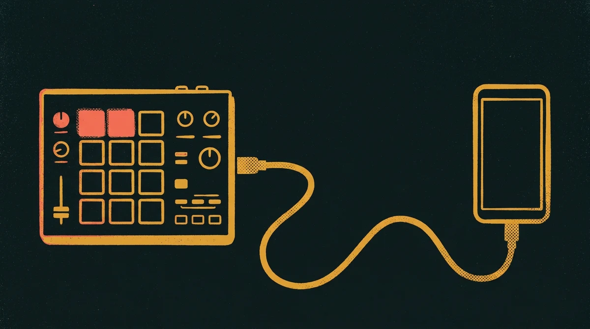
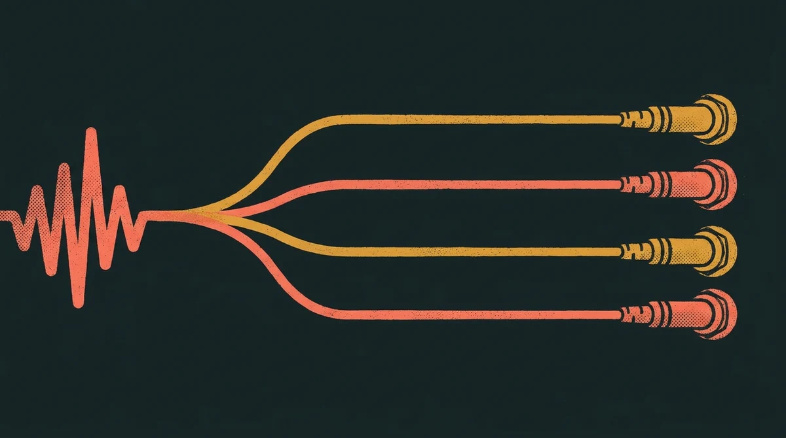

Rytm
Mobile
Get any sound into your Rytm from your phone. Chop a voice memo, a screen recording or a whole track, split it into stems, and send it straight to +Drive over USB.
Download APK
What it does
Browse the Rytm's +Drive, make folders, delete samples, and send new ones over USB. It speaks Elektron's own SysEx file protocol, ported from Elektroid.
Open any audio or video file: MP3, WAV, M4A, FLAC, screen recordings or voice memos. Trim it on the waveform and send it. The app converts it to 48 kHz, 16‑bit mono, with clean resampling and dither.
Split a track into drums, bass, guitar, piano, other and vocals, or a drum stem into kick, snare, toms and cymbals. Stems land in a +Drive folder, ready to load. The splitting itself happens on your own computer at home, which your phone reaches over Wi‑Fi, or from anywhere with Tailscale. Set it up below.
Install
- On the phone, tap Download APK above.
- Open the downloaded file. Android asks whether your browser or file app may install apps. Allow it for that app only.
- Play Protect may warn you that it doesn't know this developer. The app isn't on the Play Store, so that's expected. Choose to install anyway.
- Optional: check that the file's SHA‑256 matches the one above.
- Already have an earlier 1.x? Just install this one over it, like any update. It's signed with the same key, so you don't need to uninstall anything.
- Still on one of the very first test builds (the debug ones)? Uninstall that one first. It was signed with a different key, so Android won't install over it.
You need
- An Analog Rytm MK1 with its USB mode set to USB MIDI.
- A USB‑C OTG cable or adapter from the phone to the Rytm's USB port.
- Android 10 or newer.
- For Split only: a Mac or Linux computer running the stem server. Setting it up takes one command.
Set up your computer
You only need this for Split. Sending and chopping samples work with just the phone and the Rytm.
Splitting a track into stems takes far more power than a phone has, so it runs on a real computer. You install a small program, the stem server, on a computer at home. It sits quietly in the background. When you split a track, your phone sends it to the computer, the computer does the work, and the stems come back to the phone.
- A Mac or a Linux PC. Macs with Apple silicon (M1 or newer) are fastest. Intel Macs work, but splitting is much slower, the 6-stem split uses an older model (HTDemucs), and the drum-kit split isn't available.
- A compiler, for one small part the installer builds. On a Mac, if it's missing, the installer asks you to run
xcode-select --installonce. On Linux:sudo apt install build-essential(Ubuntu, Debian, Mint),sudo dnf install gcc(Fedora) orsudo pacman -S gcc(Arch). - About 2 GB of free disk space to start, and up to about 3.5 GB once you've used every split mode. Each mode downloads its model the first time you use it: vocals about 900 MB, drum kit about 440 MB, 4 stems about 340 MB.
- An internet connection for the install.
- On Linux, an NVIDIA graphics card is used automatically if it has its driver installed. You don't have to set anything.
Install it
- Open Terminal. On a Mac it's in Applications › Utilities, or search for “Terminal” with Spotlight. On Linux, open your terminal app.
- Copy this line, paste it into Terminal and press Return:
curl -fsSL https://rytm-mobile.pages.dev/install.sh | bash
- Wait a few minutes. It sets up about 2 GB of files, including a 700 MB model, so a slow connection takes longer. You don't need to answer anything.
- When it says Done, it prints a square pairing code made of blocks. Leave the window open and pair the app.
- Puts the server, its own copy of Python and its models in one folder,
~/.rytm-stems, in your home folder. Outside that folder it only adds a small Python helper (uv) and the setting that starts the server at login. It leaves your system's Python alone. - Starts the stem server in the background. There's no window or app to keep open.
- Starts it again by itself every time you log in, so it's always ready.
- Downloads the main splitting model (about 700 MB) once, so your first split doesn't have to wait for it.
Running the same line again updates the server. It keeps your pairing, your models and your finished splits.
To see the pairing code again (on a new phone, or after setting up Tailscale), run this in Terminal:
~/.rytm-stems/pair
To remove the stem server, run this. It stops the server, stops it starting at login, and moves its folder aside instead of deleting it. It prints where the folder went; delete that folder yourself when you want the disk space back.
~/.rytm-stems/uninstall
Windows isn't supported yet. For now you need a Mac or a Linux PC for splitting. Everything else in the app works without a computer.
Pair the app
Pairing tells the app where your computer is and gives it the password (the token) for your stem server. You do it once.
- Install Rytm Mobile on the phone first (see above).
- Point the phone's camera at the pairing code in Terminal and tap the link it shows. If the camera won't read it, send yourself the
rytmmobile://pair…link printed under the code, then open it on the phone. - Rytm Mobile opens, and its Split tab fills in the server and token by itself.
- Try a split. If it can't reach your computer, see Troubleshooting.
The pairing code holds your token. Treat it like a password: don't post a photo of it.
Use it away from home
Right after install, the phone can reach your computer only on the same Wi‑Fi. To split from anywhere, use Tailscale, a free app that links your own devices privately over the internet.
- Install Tailscale on the computer and on the phone: tailscale.com/download.
- Sign in to the same account on both.
- On the computer, run
~/.rytm-stems/pairin Terminal again. The new code uses the Tailscale address. - Scan the new code with the phone, like the first time. Now it works on mobile data or any Wi‑Fi, as long as Tailscale is on.
Troubleshooting
- Away from home: Tailscale must be on, and signed in to the same account, on both the phone and the computer.
- At home without Tailscale: the phone must be on the same Wi‑Fi as the computer.
- The computer must be on and awake. A Mac running on battery goes to sleep, and the stem server sleeps with it. Keep it plugged in and awake.
- Set up Tailscale after pairing? Run
~/.rytm-stems/pairand scan again.
The app's saved token doesn't match the computer's, usually after a reinstall or a new phone. Run ~/.rytm-stems/pair on the computer and scan the code again.
If the model download didn't finish during install, the first split downloads it (about 700 MB). That happens once. After that, splits start right away. Intel Macs are also much slower than Apple silicon at splitting.
- In the Rytm's settings, set the USB mode to USB MIDI.
- Check the Rytm's MIDI port settings allow USB, so it sends and receives over the USB port and not just the MIDI sockets.
- Use an OTG cable or adapter, and plug it straight into the phone.
